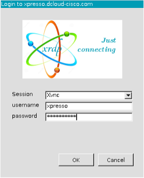

Step 2: Run tests and compare results from XPRESSO dashboard¶
Value Proposition: In today’s fast-paced business environment, efficiency and agility are crucial for success. The XPRESSO dashboard empowers organizations to streamline their testing processes, enabling rapid identification and resolution of network issues. By leveraging XPRESSO’s powerful capabilities, businesses can minimize downtime, enhance customer satisfaction, and maintain a competitive edge.
With XPRESSO, network administrators can execute pre-configured test jobs, monitor their execution status in real-time, and quickly identify potential failures or deviations from expected behavior. Furthermore, XPRESSO’s advanced comparison features allow for in-depth analysis of test results, facilitating root cause analysis and informed decision-making.
Note
Due to security restrictions in dCloud on Jumphost, access to XPRESSO dashboard is provided via a Remote Desktop Protocol (RDP) session to CentOS VM running XPRESSO.
Locate XPRESSO.rdp shortcut on the desktop of the Workstation, and double-click to start Remote Desktop Protocol (RDP) session to XPRESSO VM. Login with the following credentials.
Username:
xpressoPassword:
C1sco12345
Note
If you are using AnyConnect VPN and have a Microsoft RDP client installed, you can connect directly from your PC via RDP to address XPRESSO VM (use IP address: 198.18.134.50).
Inside the RDP session, open Firefox from the desktop or the Application menu on top of the screen. You should be automatically logged into XPRESSO dashboard and see the Requests page:
From the menu icons on the left, locate the Jobs item and click on it:

You will see the pre-configured job Ping_from_ASA which executes task3step4.py script you’ve used in this Scenario:

Hover your mouse over the job row and you will see the Execute icon on the right. Click it:

You will be presented with a
You are configuring a new group job requestpage where you can customize job run settings. Leave all settings by default and click the Submit button. Once done, the job will be submitted for execution.At the bottom of the job execution page, you will see the
requestitem, which will go through the different stages: PREPARING, QUEUING, QUEUED, RUNNING, PASSED, ERRORED, or FAILED:
Click on the Request Item while the job is running, and you will see how pyATS is executing every test defined in the job file one by one in real-time:

Note
If you click on the
requestitem while the job is going through PREPARING, QUEUING, QUEUED stages, there will be no visible results as the job is not running yet. Once the job transitions to the RUNNING stage, the page will be updated and you will start getting test the execution results,Once job execution is completed, you will see the results, can check raw console output, job history with timestamps, download archive with results, or compare test execution with another job run:

Let’s introduce a network failure by connecting to csr1000v-1 and shutting down interface GigabitEthernet2. From Admin Workstation launch Putty, login to csr1000v-1, and execute commands:
configure terminal interface gigabitEthernet 2 shutdownGo back to the XPRESSO dashboard and click on the Jobs menu item:
Run Ping_from_ASA job again by repeating Steps 4 - 7. This time you will notice that one of the tests is failing:
Now let’s compare job results. On the top of the page click on the Compare button and check the last job run that was successful and has the status PASSED:
You will see the summary of the comparison for both job runs and a number of passed and failed tests:
Hover the mouse over the failing test line ping[dest_ip=10.0.0.13], and click Testcase Diff icon on the right to see the test result in diff format:

Section diff page will open and load the diff plugin:

Note
Alternatively, you can compare test results by going to the Requests page and selecting 2 requests for comparison as described below.
Click on the Requests menu item:
Select 2 requests - PASSED and FAILED, and click the Compare icon on the top right of the page. The compare icon will be visible only if you select exactly 2 items:

Select 2 results for comparison and click Compare icon. This additional step is required as Job can include several requests run as Job Bundle:

You will be brought to the results comparison page:


{kind=link}
{kind=link}
{kind=link}
{kind=link}
{kind=link}
Section author: Luis Rueda <lurueda@cisco.com>, Jairo Leon <jaileon@cisco.com>